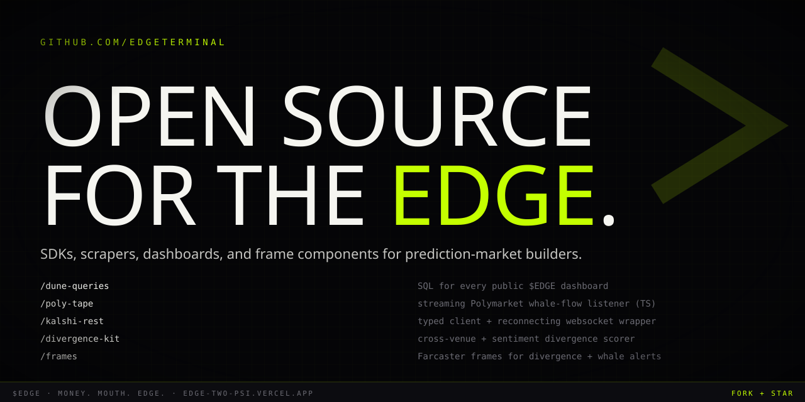

03.13 / Social Asset Pack · GitHub
GitHub. Open SQL.
Org avatar 460×460, social preview 1280×640 (OG image for github.com/edgeterminal). README copy lives at edgeterminal/.github/profile/README.md.
Org Avatar
03.13.01 · 460×460

460 × 460 · SVG · square (GitHub rounds corners)
Social Preview / OG Image
03.13.02 · 1280×640

1280 × 640 · SVG · Settings → Social Preview
Pinned Repositories
03.13.03 · 6 max on org profile
| Repo | What it is |
|---|---|
| poly-tape | Streaming Polymarket whale-flow listener (TS). Subscribes to public stream, normalizes, emits typed events. |
| kalshi-rest | Typed Kalshi REST client + reconnecting WebSocket wrapper (TS). |
| divergence-kit | Cross-venue + sentiment divergence scorer (Python core, TS bindings). |
| dune-queries | SQL for every public $EDGE Dune dashboard. License: MIT. |
| frames | Farcaster frames: divergence-of-the-day, whale-of-the-hour, holder-gated alpha. |
| terminal | Public roadmap + issue tracker for the closed-source web app. Issues only. |
Org-Profile README
03.13.04 ·
edgeterminal/.github/profile/README.mdrenders at github.com/edgeterminal
README.md
<div align="center"> <img src="https://raw.githubusercontent.com/edgeterminal/.github/main/assets/mark.svg" width="120" alt="$EDGE mark" /> # $EDGE ### The terminal for prediction markets. Money. Mouth. Edge. [**Site →**](https://edge-two-psi.vercel.app/) · [**X →**](https://x.com/edgeterminal) · [**Discord →**](https://discord.gg/edge) · [**Dune →**](https://dune.com/edge) </div> --- ## What lives here Open-source tooling for prediction-market builders. SDKs, scrapers, scoring libraries, Farcaster frames, and the SQL behind every $EDGE Dune dashboard. The closed-source web terminal lives at [edge-two-psi.vercel.app](https://edge-two-psi.vercel.app/). The data plumbing under it is here. ## Pinned repositories | Repo | What it is | |---|---| | [poly-tape](https://github.com/edgeterminal/poly-tape) | Streaming Polymarket whale-flow listener (TS). | | [kalshi-rest](https://github.com/edgeterminal/kalshi-rest) | Typed Kalshi REST client + reconnecting WebSocket wrapper (TS). | | [divergence-kit](https://github.com/edgeterminal/divergence-kit) | Cross-venue + sentiment divergence scorer (Python + TS bindings). | | [dune-queries](https://github.com/edgeterminal/dune-queries) | SQL for every public [$EDGE Dune dashboard](https://dune.com/edge). | | [frames](https://github.com/edgeterminal/frames) | Farcaster frames: divergence-of-the-day, whale-of-the-hour, holder-gated alpha. | | [terminal](https://github.com/edgeterminal/terminal) | Public roadmap + issue tracker for the closed-source web app. PRs not accepted; issues + discussions are. | ## How we work - **Open SQL, open scorers, open clients.** The closed bits are the web app, the picker weights, and the realtime delivery infrastructure. - **Receipts in every issue.** Bug reports without a reproducer get closed politely. - **Master is always green.** CI on every PR. - **Conventional commits.** `feat:`, `fix:`, `chore:`, `docs:`. We auto-generate changelogs. ## Contributing 1. Read the relevant repo's `CONTRIBUTING.md` first. 2. Open an issue before a non-trivial PR. 3. Keep PRs under 400 lines unless coordinated. 4. Tests required for `divergence-kit`, `poly-tape`, `kalshi-rest`. ## Founders - **Robert Noejr** — [@robertnoejr](https://github.com/robertnoejr) — product, frontend - **Tye** — [@tye](https://github.com/tye) — data, infra ## License MIT across all public repos unless explicitly stated otherwise. --- <div align="center"> **Watch the action. Before you bet.** [edge-two-psi.vercel.app](https://edge-two-psi.vercel.app/) </div>
Setup Notes
03.13.05
Create org
edgeterminal. Upload pfp.svg (export 460×460 PNG) as org avatar. URL: edge-two-psi.vercel.app. Twitter: @edgeterminal.Create the special repo
edgeterminal/.github. Add profile/README.md with the copy above. This renders at github.com/edgeterminal.Drop the mark + favicon SVGs into
edgeterminal/.github/assets/ so the README image src resolves. Same SVGs from /marketing/01-brand-foundation/assets/.Upload
banner.svg exported to 1280×640 PNG under Settings → Social Preview. This is the OG image when github.com/edgeterminal is shared.Create the 6 repos. Each gets its own social preview using the banner template with eyebrow swapped to
REPO / {name}.Set MIT license org-wide via the org's
community-standards. Add CODE_OF_CONDUCT.md, CONTRIBUTING.md, and SECURITY.md to the .github repo — they propagate to every repo that lacks its own.Pin the 6 repos in the exact order:
poly-tape, kalshi-rest, divergence-kit, dune-queries, frames, terminal. (Highest-value SDK first.)